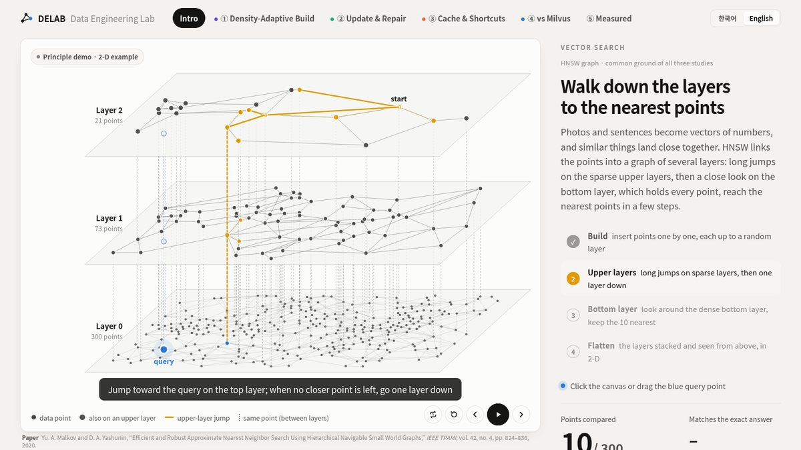

BuildDATE 2025
DHNSW: density-adaptive construction
Each point's local density sets its own link budget. Crowded regions get more links and sparse ones fewer, and a lower bottom-layer cap trims memory while recall holds.
金辉君 · 김휘군
I am a Ph.D. candidate in Computer Science at Yonsei University, advised by Prof. Sanghyun Park in the Data Engineering Lab. I work on vector search: graph indexes (HNSW) that are efficient to build, stay healthy under updates, and hold up when queries come from a different distribution than the data.
Available for a postdoctoral position from March 2027
My dissertation, Optimizing Efficiency, Updatability, and Robustness of HNSW Indexes for High-Performance Vector Search, follows an HNSW index from build to update to search, with one study for each stage.
Each point's local density sets its own link budget. Crowded regions get more links and sparse ones fewer, and a lower bottom-layer cap trims memory while recall holds.
Deleting and reinserting points breaks paths in the graph. PRO-HNSW clears obsolete links, reconnects cut-off points and adds missing reverse links, so the index stays searchable without a rebuild.
Queries from another modality strand a search on one side of the data. CAMP-HNSW packs nearby vectors together in memory and adds shortcuts, mined from past queries, where searches get lost.
The three techniques are combined into one HNSW, built into Knowhere, the vector search engine of Milvus, and measured over the index's full life cycle against Milvus's default HNSW.

Made for my dissertation defense and for visitors to the lab. Each study runs live in your browser on a small 2-D example, one step at a time, next to measurements taken in Milvus.